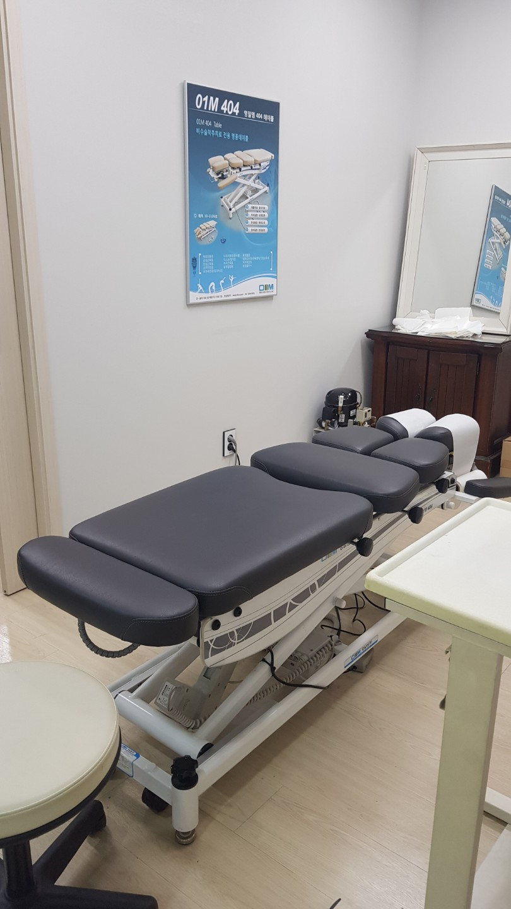
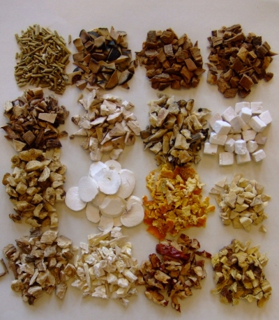
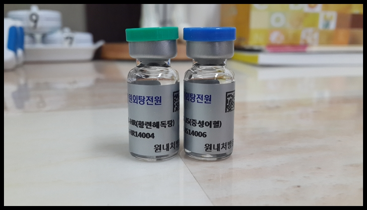
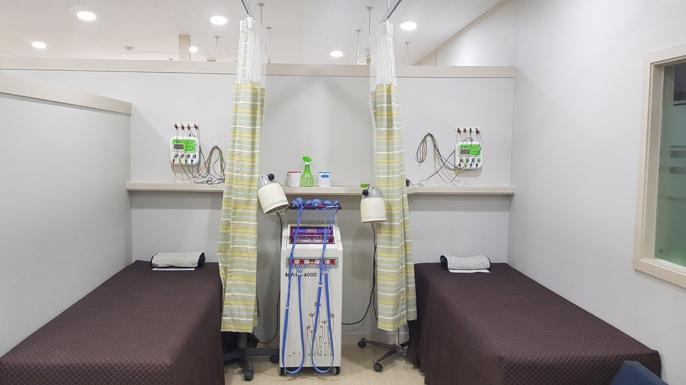

우성한의원은 초음파 진단을 통한 면밀한 파악과 체질별 맞춤 한방 치료로
환자분이 일상으로 빠르게 복귀하실 수 있도록 최선을 다해 돕습니다.
침, 부항, 물리치료는 물론 어혈 치료 한약, 추나요법, 약침 치료까지
자동차보험 혜택이 적용되어 환자분의 본인 부담금 없이(0원) 치료가 가능합니다.
(단, 환자가 별도로 희망하는 일부 비급여 항목은 제외될 수 있습니다.)
복잡한 서류 작업이나 보험사 청구는 한의원에서 안내해 드리니 회복에만 집중하세요!
X-ray나 MRI 검사상 뼈에 이상이 없어도 지속되는 목, 허리의 통증과 두통, 불면증. 한의학에서는 사고 당시의 물리적 충격으로 인해 미세 혈관이 파열되어 뭉친 나쁜 피, 즉 어혈(瘀血)을 통증의 주원인으로 봅니다. 우성한의원은 근육과 인대의 손상을 초음파로 꼼꼼히 살피고, 어혈 배출을 통해 신체의 자생력 회복을 돕습니다.

X-ray로 보이지 않는 근육과 인대의 미세한 손상을 초음파 기기로 면밀하게 진단합니다. 이후 원장님이 직접 사고 충격으로 틀어진 척추와 관절의 정렬을 바르게 교정하는 추나요법을 시행하여 구조적인 통증 완화에 도움을 줍니다.

사고 직후 체내에 발생한 어혈 배출을 촉진하고, 손상된 근육과 인대의 회복을 돕는 맞춤 한약을 처방합니다.

초음파로 통증 부위를 꼼꼼히 확인한 후, 순수 한약재 성분을 정제한 약침이나 봉침을 경혈에 주입하여 국소 부위의 염증 감소와 신경 기능 회복을 지원합니다.

경직된 근육을 풀어주는 침 치료, 어혈을 빼내는 부항 치료, 통증 부위의 혈류 순환을 촉진하는 한방 온열 및 간섭파 물리치료를 병행하여 치료 시너지를 높입니다.
환자분은 '사고 접수 번호'와 '보험사 이름' 단 두 가지만 알고 오시면 됩니다.
데스크에 자동차보험 진료 접수를 말씀하시고, 사고 접수 번호를 알려주세요.
한의원에서 직접 보험사 담당자와 연락하여 진료비 지불보증서를 빠르게 발급받습니다.
초음파 진단, 진맥 등을 통해 통증 부위와 체질을 꼼꼼히 파악하고 맞춤 치료를 진행합니다.
모든 자동차보험 적용 치료 비용은 한의원이 보험사에 청구하므로, 별도의 수납 절차 없이 귀가하시면 됩니다.
최근 개정된 자동차보험 약관에 따라 경상 환자(12~14급, 염좌 및 타박상)의 치료 기준이 변경되었습니다.
✔️ 4주~8주 치료 시: 주치의의 향후 치료 소견이 담긴 진단서 제출 시 지불보증 연장
✔️ 8주 초과 장기 치료 시 ('8주 룰'): 사고일로부터 7주 이내에 진단서 및 진료기록 등을 제출하여, 자동차손해배상진흥원(자배원)의 '치료 필요성 검토'를 거쳐야만 추가 치료가 가능합니다. (임산부, 만 7세 이하 영유아 제외)
💡 8주가 넘어가면 무조건 치료를 중단해야 하나요?
아닙니다. 통증이 지속되어 실제로 치료가 더 필요한 환자분들은 크게 걱정하지 않으셔도 됩니다.
8주 초과 심사 시 가장 중요한 것은 '향후 치료가 필요한 객관적 사유'입니다. 우성한의원은 손상부위와 호전 경과를 꼼꼼히 확인하고, 진단서와 진료기록부 발급을 도와드려 환자분이 회복될 때까지 합당한 치료를 받으실 수 있도록 든든하게 지원합니다.